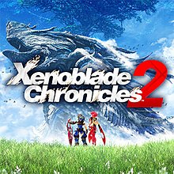

Xenoblade Chronicles 2
Xenoblade Chronicles 2 is a 2017 action role-playing game developed by Monolith Soft and published by Nintendo for the Nintendo Switch. Released on December 1, it is the third installment in Xenoblade Chronicles and the seventh main entry in the Xeno series. Plans for the game began shortly before the launch of Xenoblade Chronicles X in 2014. Key developers from previous games returned, including franchise creator Tetsuya Takahashi, and directors Koh Kojima and Genki Yokota. The team wanted to develop a story-driven game in the style of the original Xenoblade Chronicles. The game was announced in 2017 with a worldwide release date planned for the same year. As with Xenoblade Chronicles, the game was localized by Nintendo of Europe.
